市場歷史
1657年江戶市街遭遇大火，於是當時的德川幕府決定在江戶海邊填海造陸，並使用了當時先進的填地技術填除了東京灣，也就是今天我們所說的「築地」。
最初的築地大多為神社和武士的住所，後來因為戰爭慢慢變成外國人居住地和日本海軍用地。1923年關東大地震使東京市區受到了毀滅性的重創，當時的「日本橋魚市場」因此暫時搬遷到築地明石町，直到1935年才正式成為批發市場。
築地市場有「東京廚房」之稱，銷售近500種海鮮，這裏緊鄰東京繁華的銀座區，頂級餐廳雲集，因此搜尋最佳食材的廚師們便與市場商販們建立起緊密聯繫。
築地市場分為場內市場與場外市場。於場內市場舉行的金槍魚拍賣往往會吸引大買家。這裏還會舉行一年一度的新年拍賣，由於這項活動被認為可以為生意帶來好運，新年拍賣的價格往往高於市價。
但許多人認為此處破舊且過於擁擠，魚販們將從這座舊址搬遷到約2公里外的豐州，進駐一個更新、更現代化的場所。築地場內市場搬遷到豐州將更名為「豐州市場」，舊市場在2018年10月6日開始歇業。新豐州市場的面積是築地市場的兩倍，距離舊市場大概2.3公里左右。
雖然市場的搬遷讓人感到很遺憾，但是別忘了場外市場還有許多老店在等待大家。去新市場的遊客可以搭乘「海鷗線」在「市場前站」下車哦！
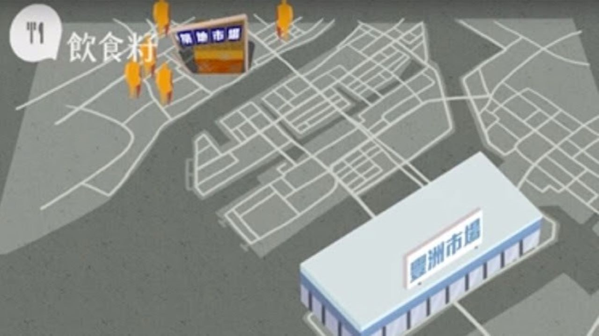
常見刺身
➢ 鮪魚
鮪屬屬有8個物種，其中多數物種體積巨大，最大的體長達3.5公尺，重達600至700公斤，而最小的物種只有3公斤重。
鮪魚目前仍為常見食用肉類，有多種食法，日本人喜歡把鮪魚切成生魚片或製成壽司，歐洲及美國人則會把鮪魚弄碎製成罐頭，可製做三明治等食品。臺灣人在過去生魚片、壽司文化未流行前，鮪魚為低價魚，熟食烹煮肉質堅硬，不受歡迎，多做成罐頭低價販賣或出口。
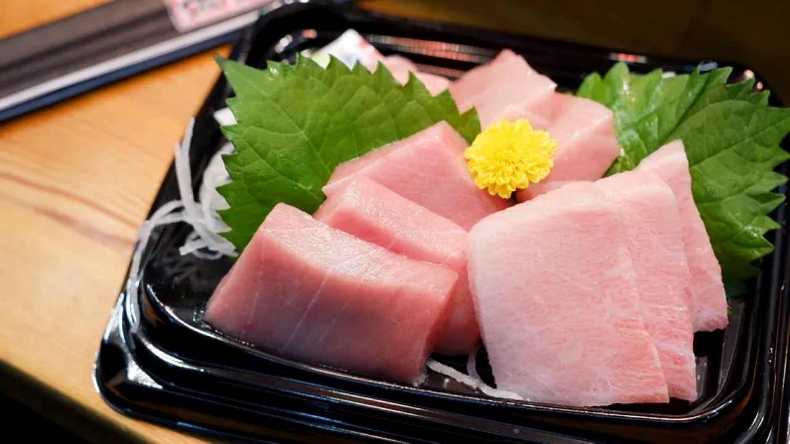
➢ 鮭魚
鮭魚主要指棲息於北太平洋的六種太平洋鮭和棲息於北大西洋的一種大西洋鮭。
鮭魚的食法有多種，但因為寄生蟲問題，在製冷技術普及前普遍沒有生食的傳統。即使是以生魚片聞名的日本料理最初也只用於熟食，也會把鮭魚頭製成鹽燒鮭魚等菜式；歐美會以熱或冷煙燻方式製作煙燻鮭魚，或把鮭魚製成罐頭以便儲存，北歐地區亦有醃製鮭魚。在20世紀下半葉，挪威爲了開拓在遠東的出口市場以便推廣自己的「天然鮭魚」產品，發明了更容易被日本大眾接受的鮭魚壽司和刺身。
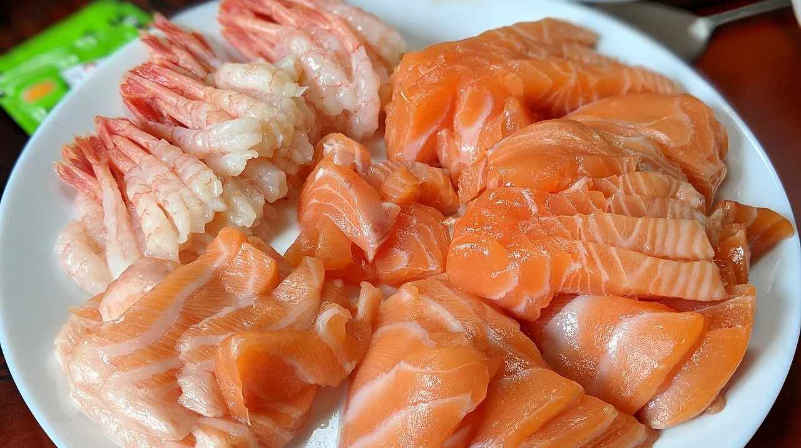
➢ 蝦
蝦，俗稱蝦子，是多種生活在水中的長身甲殼亞門節肢動物的共同泛稱。
許多不同的文化使用蝦作為食物。蝦既可以作為調味品，又可以作為一道菜的主料。大的蝦在烹飪前一般要將頭、身上的殼和尾去掉。蝦肉有很高的鈣和蛋白質的含量，而含的熱量則比較小。
常見的蝦制食品有蝦仁、蝦籽、蝦醬、蝦餅等。
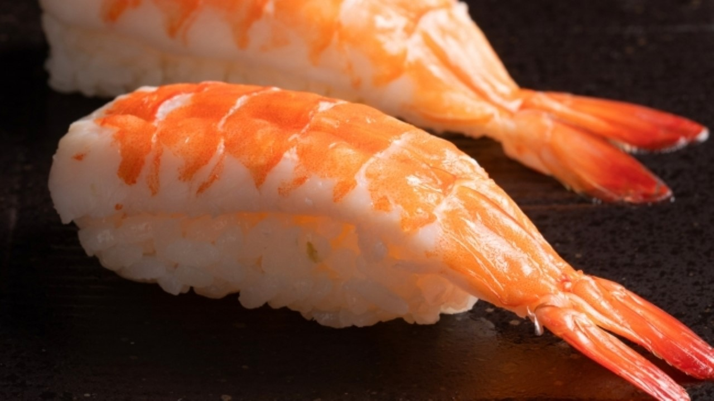
➢ 鯛魚
真鯛俗稱正鯛、赤鯛，是條鰭魚綱鯛形目鯛科的其中一種。
鯛魚在日本屬高級魚，而且鯛魚的讀音「Tai」（タイ）剛好壓了日文中「可喜可賀」讀音「Medetai」（めでたい）的韻腳，因此鯛魚也普遍被認為是極具好兆頭的食材，有祝賀之意。
雖然醬煮鯛魚和鯛魚飯等這些熟食煮法已經非常好吃了，但把鯛魚用來捏壽司，就能品嚐出鯛魚獨特淡雅風味和細緻口感喔。
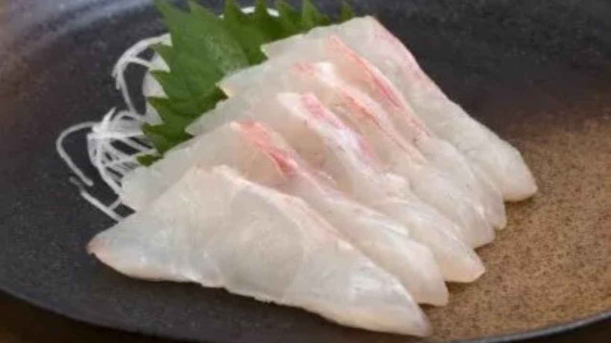
➢ 海膽
海膽是一類海生的棘皮動物，屬於棘皮動物門海膽綱，廣泛分佈於世界各地的海洋，從潮間帶至數千公尺的深海底都可發現其蹤跡。
海膽是一款日本特別珍貴且價格昂貴的珍味之一，亦是軍艦壽司的代表性食材之一。特徵是呈現深黃色或橘色的外觀，濃郁甜味，以及宛如奶油般的口感。為了維持其顏色和鮮度，一般店鋪通常會使用一種叫「明礬」的食品添加劑來防腐保鮮。
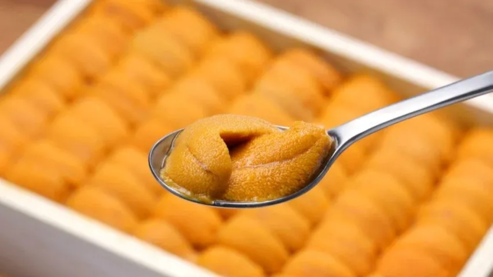
美食
1. 山長玉子燒
山長玉子燒，是一系列築地市場玉子燒名店中，人潮最洶湧。
築地市場有丸武玉子燒、松露玉子燒、山長玉子燒抖很多間玉子燒專賣店，其中山長玉子燒總是人潮最多的，不過可以直接排隊不用擔心很快就能拿到，一份200日圓，吃起來柔嫩紮實，入口滿滿蛋香與柴魚香。
2. 狐狸屋牛丼
狐狸屋牛丼，排隊到天荒地老，假日約1小時才能吃到，是超強築地市場必吃美食。
最多人推薦「牛臟蓋飯」，味噌燉煮牛腸、牛肝等內臟超入味，搭配蔥花、再加點半熟蛋或生蛋一吃上癮；人氣次之「牛蓋飯」多瘦肉不膩口，有中文菜單要但要主動索取，兇人婆婆沒來大家都狂拍照。
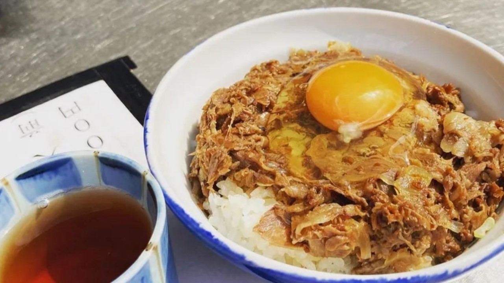
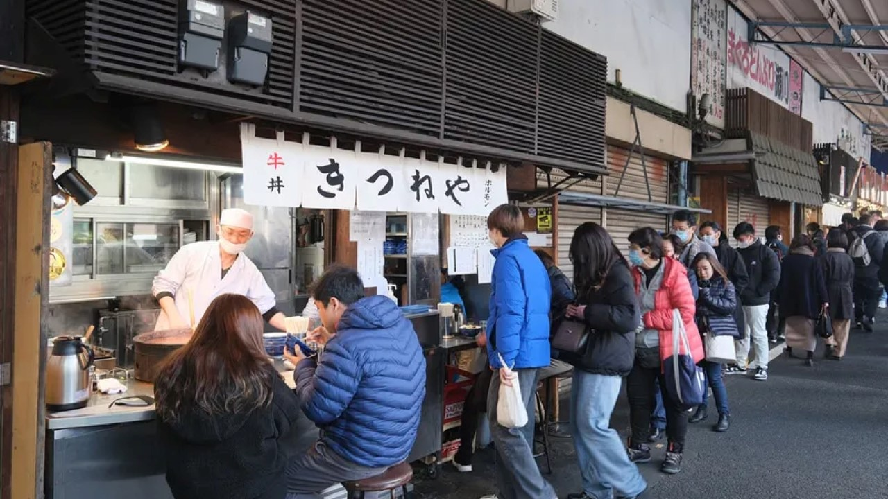
3. 飯糰屋丸豐
おにぎり屋丸豊也是築地市場的人氣店家，專賣日式飯糰，凌晨三點就開門營業，不只觀光客喜愛，就連日本人都會來買，老闆製作了海鮮飯糰、炸蝦飯糰、水波蛋、鮭魚卵、紫蘇梅⋯等各種口味的選擇，每個都在200日圓左右超級便宜，吃完生魚片之後來上一顆超有飽足感。
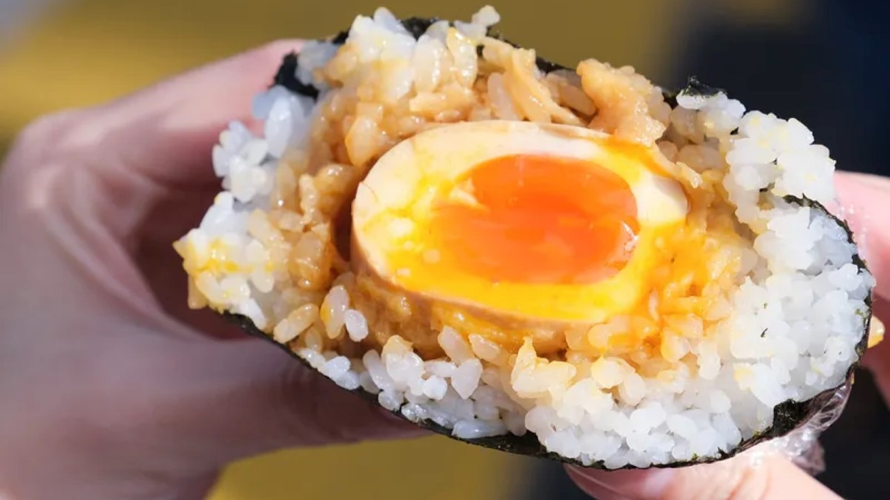
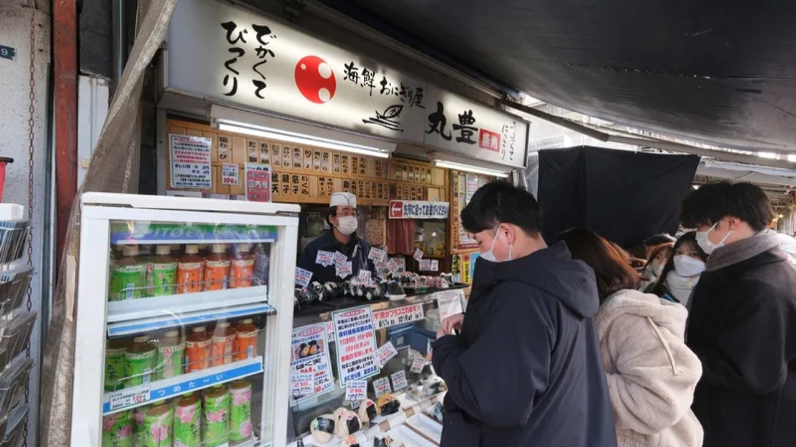
4. まぐろや黒銀
來到築地市場，新鮮現切的生魚片自然不能錯過，其中這間まぐろや黒銀每次來都是大排長龍，店裡專賣鮪魚壽司、生魚片，點了盤鮪魚中腹、鮪魚前腹赤身的拼盤，豐富油脂和鮮美魚肉很迷人，而且切的很大塊，重點是價格算是便宜，感覺比我們在台灣東港吃鮪魚更實惠，現場還能看到師傅精心處理魚肉的過程。
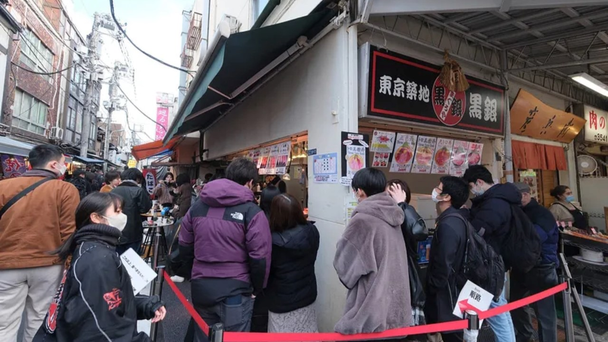
5. 丸武玉子燒
丸武玉子燒創業超過80年歷史了，是由日本知名藝人テリー伊藤父母所開立的。最熱銷的就是限定款，玉子燒三明治；單純玉子燒也推薦，滿滿蛋香層層密實厚實，秘製高湯帶來的鮮甜味，很不賴呢。
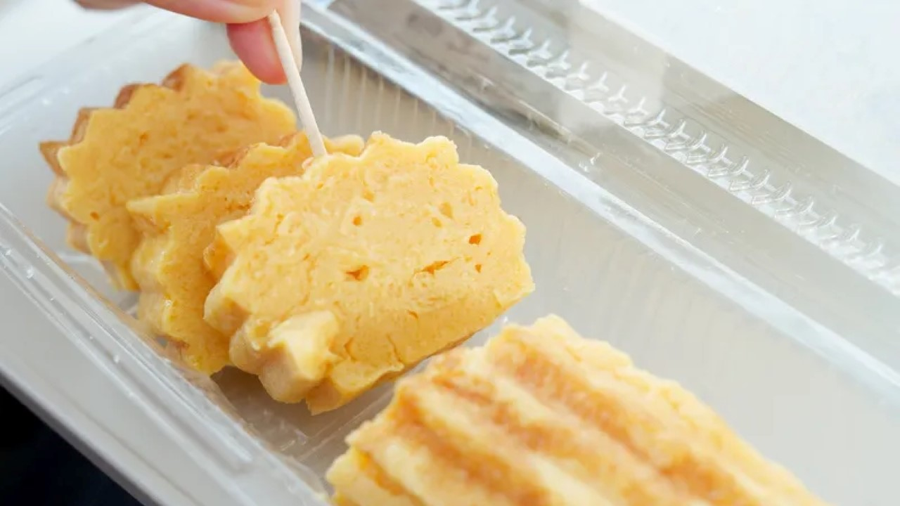
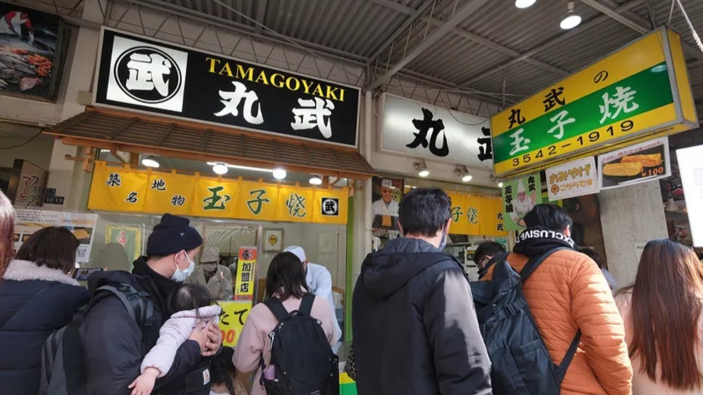
商店